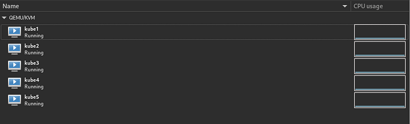
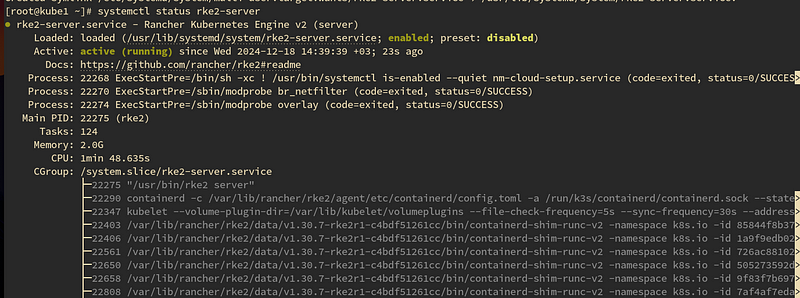
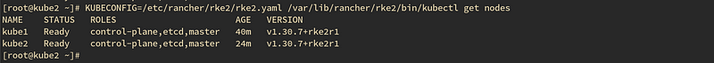
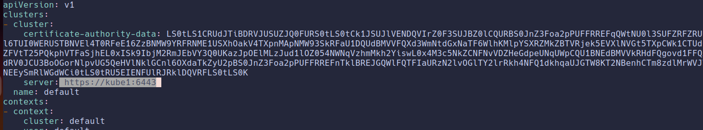
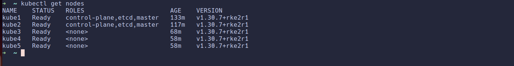
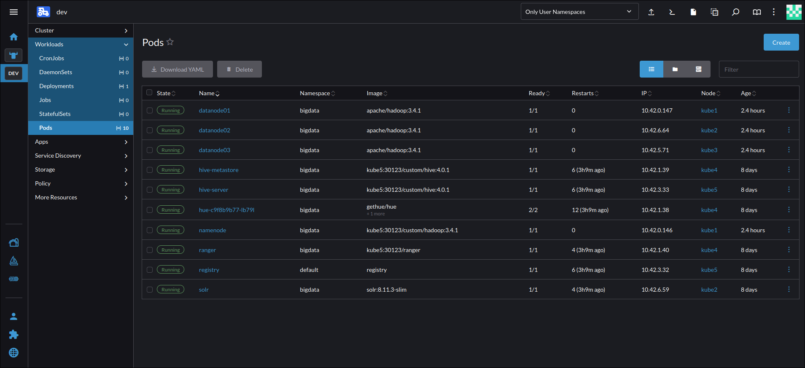

Kubernetes Installation
Warning
This guide is intended for testing and learning purposes only. It omits many details necessary for production environments. Do not use this setup in production.
Kubernetes Nodes
For this cluster, I used five virtual machines (VMs): one master node and four worker nodes. In production environments, at least three master nodes are recommended for high availability. The VMs can have different configurations or sizes. I installed Rocky Linux 9.5 on all VMs, but any compatible Linux distribution can be used.
The host system runs Arch Linux with QEMU/KVM and Libvirt for virtualization. Below is an overview of the VMs: 
{kind=link}
Before proceeding with the installation, ensure your setup meets all prerequisites outlined in the RKE2 Quick Start Guide.
Rocky Linux 9.5 satisfies most prerequisites by default. However, I had to disable the firewalld service and SELinux on all nodes:
systemctl disable --now firewalld
sudo sed -i 's/^SELINUX=.*/SELINUX=disabled/' /etc/selinux/config && sudo setenforce 0
Additionally, I updated the /etc/hosts file on all nodes and the host machine to simplify node communication. This step is optional but recommended. Below is an example of my /etc/hosts file:
Rancher Kubernetes Engine (RKE2)
RKE2 is a production-grade Kubernetes distribution provided by Rancher. Also known as "RKE Government," it is designed for enhanced security and compliance, particularly for U.S. Federal Government use cases. For more details, refer to the RKE2 documentation.
Setting Up the First Master Node
Master nodes run critical Kubernetes components such as etcd and the control plane. For high availability, at least three master nodes are recommended. However, for this testing setup, I used a single master node.
RKE2 provides an installation script that automatically checks your environment and installs the required packages.
Tip
All commands in this guide should be run as a superuser.
To set up the first master node (e.g., kube1), download and execute the installation script:
Start the rke2-server service:
Verify the service status:
{kind=link}
Setting Up Additional Master Nodes (Optional)
To add more master nodes, configure each new node to join the existing cluster. Before installation, create a configuration file on the new node (e.g., kube2):
Add the following values to the config.yaml file:
server: The DNS name or IP address of the first master node.
- token: The cluster token, which can be retrieved from the first master node:
For example, my config.yaml file looks like this:
server: https://kube1:9345
token: K1010d01bdaf32a792d9d233981959a757addaa6e8f6d622a68948467e495144155::server:af29acb6148c5132be664524a8822a76
Next, install RKE2 on the new master node:
Start the rke2-server service:
After a few minutes, the new master node should join the cluster. Verify the cluster status using the following command on any master node:
The output should display all nodes in the cluster: 
{kind=link}
You can add more master nodes using the same steps. For more details on distributing Kubernetes roles, refer to the RKE2 server roles documentation.
Worker Nodes
The process for setting up worker nodes is similar to adding additional master nodes, with one key difference: you must specify the worker node type.
First, create the config.yaml file on the worker node:
Add the same server and token values as in the master node setup.
To install the worker node, run the following command:
Start the rke2-agent service:
Verify the worker node status from any master node:
Repeat these steps to add more worker nodes.
Accessing the Kubernetes Cluster
Manually connecting to the master node for every Kubernetes CLI command can be inefficient. Instead, you can configure access to the cluster from your local machine.
First, install kubectl on your local machine by following the official guide.
Next, copy the /etc/rancher/rke2/rke2.yaml file from the master node to your local machine. Update the server address in the configuration file to the master node's IP address or DNS name (instead of 127.0.0.1 or localhost).
For example: 
{kind=link}
Warning
Ensure that your local machine has network access to the master node. You may need to adjust firewall rules.
After updating the configuration, verify the connection:
If successful, you should see a list of nodes in your cluster: 
{kind=link}
Kubernetes Management
You can use various tools to manage your Kubernetes cluster. Some popular options include:
- Rancher UI docker
- Portainer
- k9s (a minimal TUI tool)
k9s:
{kind=link}
Rancher: 
{kind=link}
Extra: Custom Docker Registry
Some big data services require custom Docker images. To simplify this, you can deploy a custom Docker registry within your Kubernetes cluster.
Here’s an example configuration for a Docker registry running on the kube5 node:
apiVersion: v1
kind: Pod
metadata:
name: registry
namespace: default
labels:
app: registry
spec:
nodeSelector:
kubernetes.io/hostname: "kube5"
containers:
- name: registry
image: registry:latest
ports:
- containerPort: 5000
volumeMounts:
- name: registry-volume
mountPath: /var/lib/registry
volumes:
- name: registry-volume
hostPath:
path: /data/registry
type: Directory
---
apiVersion: v1
kind: Service
metadata:
name: registry-svc
namespace: default
spec:
type: NodePort
selector:
app: registry
ports:
- port: 5000
targetPort: 5000
nodePort: 30123
Deploy the registry:
For insecure registries, update the Docker or containerd configuration on all nodes. For example, on Docker:
Restart the Docker service:
For containerd (used by RKE2), create /etc/rancher/rke2/registries.yaml:
Restart RKE2 services:
- Master Node:
- Worker Node:
Now, all Kubernetes nodes can access the custom Docker registry.